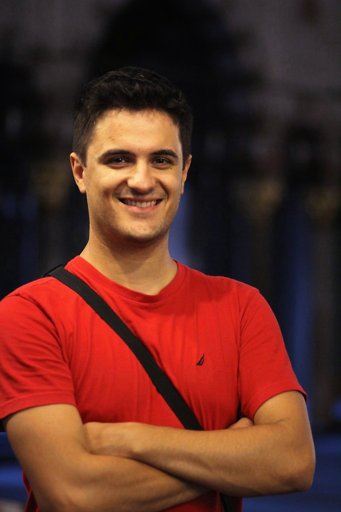

I am a PhD student at The University of Texas at Austin, working with Constantine Caramanis and Sriram Vishwanath.Research InterestsMachine Learning, High Dimensional Statistics, Large Problems. I recently worked on streaming algorithms, optimization on graphs. Using platforms for large scale computation like MapReduce and Graphlab/Giraph, I'm working on graph (node centrality) and biomedical applications (drug-drug interactions in the design of cancer cocktails). |
 | |
Software
Git repositories for the projects I'm working on.Recent News
- New paper on approximating PageRank! Get it while it's hot; it's lovely. [.pdf].
- Presenting Densest k-subgraph paper accepted at ICML 2014 [slides |video].
- Work on Streams with Overwhelming erasures preprint available.
- Succesfully defended my proposal in April 2014.
- Visiting Technion, Haifa, April 2014.
- Our work at the "Resoure-efficient Machine Learning" workshop at NIPS.
- Presented our work on Memory-limited Streaming PCA at NIPS.
- Talk on our work by my advisor, Constantine, at the Simons Workshop, Berkeley.
Publications
- FrogWild! Fast PageRank Approximations on Graph Engines. Ioannis Mitliagkas, Michael Borokhovich, Alex Dimakis, and Constantine Caramanis. Preprint, 2014. [ bib | .pdf ]
- Streaming PCA with Many Missing Entries. Ioannis Mitliagkas, Constantine Caramanis, and Prateek Jain. Preprint, 2014. [ bib | .pdf ]
- Finding Dense Subgraphs through Low-rank Approximations. Dimitris S Papailiopoulos, Ioannis Mitliagkas, Alexandros G Dimakis, and Constantine Caramanis. 2013. [ bib ]
- Memory Limited, Streaming PCA. Ioannis Mitliagkas, Constantine Caramanis, and Prateek Jain. To appear in NIPS 2013 (arXiv:1307.0032), 2013. [ bib | .pdf ]
- Distributed joint power and admission control for ad-hoc and cognitive underlay networks. I. Mitliagkas, ND Sidiropoulos, and A. Swami. In Acoustics Speech and Signal Processing (ICASSP), 2010 IEEE International Conference on, pages 3014-3017. IEEE. [ bib ]
- Joint Power and Admission Control for Ad-hoc and Cognitive Underlay Networks: Convex Approximation and Distributed Implementation. I. Mitliagkas, ND Sidiropoulos, and A. Swami. IEEE Transactions on Wireless Communications. accepted. [ bib ]
- User Rankings from Comparisons: Learning Permutations in High Dimensions. I. Mitliagkas, A. Gopalan, C. Caramanis, and S. Vishwanath. In Proc. of Allerton Conf. on Communication, Control and Computing, Monticello, USA, 2011. [ bib | .pdf ]
- Strong Information-Theoretic Limits for Source/Model Recovery. I. Mitliagkas and S. Vishwanath. In Proc. of Allerton Conf. on Communication, Control and Computing, Monticello, USA, 2010. [ bib | .pdf ]
- Convex approximation-based joint power and admission control for cognitive underlay networks. I. Mitliagkas, ND Sidiropoulos, and A. Swami. In Wireless Communications and Mobile Computing Conference, 2008. IWCMC'08. International, pages 28-32. IEEE. [ bib ]
subscribe via RSS